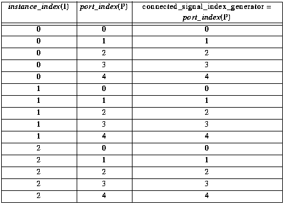
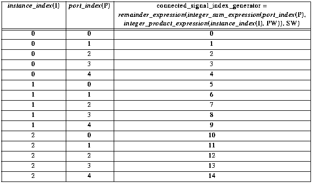

In Level 1, a mechanism is provided which controls how an individual element of an expanded instance_port is to be connected to a element of the expanded signal. It is done by specifying an integer_expression on each joined instance_port of a signal. That integer_expression, known as a connected_signal_index_generator (see entity instance_port_expression), specifies which element of an expanded signal is to connect to an element of an expanded instance_port during the design expansion process.
Suppose a cluster has an interface which defines two parameters, known as IW and SW. Within that cluster, a view is defined which contains an instance I and a signal S. The width of the instance I is controlled by an integer_expression which references parameter IW. The width of the signal S is determined by an integer_expression which references parameter SW. Suppose instance I references a cluster in which a parameter PW and a master_port P are defined. The width of the port P is determined by an integer_expression which references parameter PW. After expansion, IW, SW and PW each evaluate to an integer value.
Figure 6.1 illustrates an example of a wide signal S joining a wide port P on a wide instance I. For example, the connected_signal_index_generator expression on port P of instance I may be defined as port_index(P). The table lists the values returned by evaluating the connected_signal_index_generator expression given IW=3, PW=5 and SW=5. The port_index returns a different integer for each expanded port element. After expansion, if the width expression of a port is evaluated to be 5, five port occurrences will be created and each has a different port_index value, i.e. 0, 1, 2, 3 and 4.

Figure 6.2 illustrates another example of a wide signal S joining a wide port P on a wide instance I. In this case, the connected_signal_index_generator expression on port P of instance I is defined as remainder_expression(integer_sum_expression(port_index(P), integer_product_expression(instance_index(I), PW)), SW). The table lists the values returned by evaluating the connected_signal_index_generator expression given IW=3, PW=5 and SW=15. The instance_index returns a different integer for each expanded instance element. After expansion, if the width expression of an instance is evaluated to be 3, three instance occurrences will be created and each has a different instance_index value, i.e. 0, 1 and 2. Similarly, the port_index returns a different integer for each expanded port element.

For the PCB/MCM domain, there are a number of limitations listed below.
As stated in section 3.1, the interface of a cluster is allowed to have parameters. However, if a cluster contains any PCB/MCM views, its interface must not have any parameter definitions.
As stated in section 3.2, the width of a master_port can be varied. However, if a cluster contains any PCB/MCM views, all master_ports defined in its cluster_interface must have a fixed width of one.
In a PCB/MCM view, it may contain instances of other cells. Within an internal_pcb_mcm_view, all instances must not instantiate clusters which have parameters in their interface definitions.
As stated in section 3.4, the width of an instance can be varied. Within an internal_pcb_mcm_view, all instances must have a fixed width of one.
As stated in section 3.5, the width of a signal can be varied. Within an internal_pcb_mcm_view, all signals must have a fixed width of one.